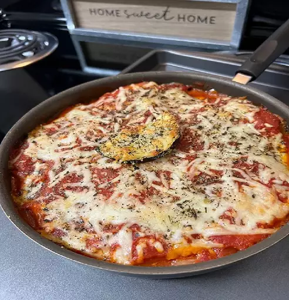

Description
The classic combination of cheesy, herb-infused tomato sauce and crisp, oven-baked eggplant never gets old. This easy eggplant Parmesan recipe gets high marks in ease and flavor from our community of home cooks. Use straightforward pantry ingredients to create Italian-inspired magic with this top-rated recipe.
Ingredients
3 large eggplant, peeled and thinly sliced
- 2 large eggs, beaten
- 4 cups Italian seasoned bread crumbs
- 6 cups spaghetti sauce, divided
- 1 (16 ounce) package mozzarella cheese, shredded and divided
- 1/2 cup grated Parmesan cheese, divided
- 1/2 teaspoon dried basil
Steps
Preheat the oven to 350 degrees F (175 degrees C).
Dip eggplant slices in beaten egg, then in bread crumbs to coat. Place in a single layer on a baking sheet.
Bake in the preheated oven for 5 minutes. Flip and bake for 5 more minutes.
Spread spaghetti sauce to cover the bottom of a 9x13-inch baking dish. Place a layer or eggplant in the sauce. Sprinkle with mozzarella and Parmesan cheeses. Repeat layers with remaining sauce, eggplant, and cheese, ending with a cheese layer. Sprinkle basil on top.
Bake in the preheated oven until golden brown, about 35 minutes.